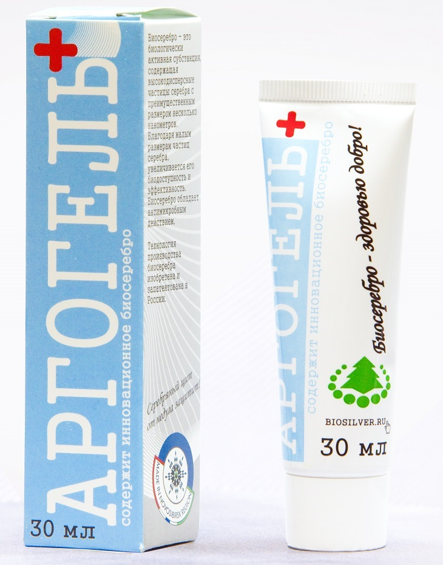
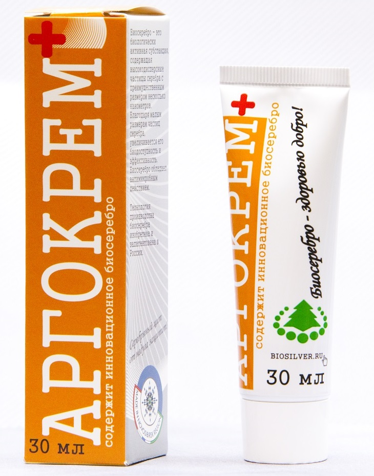
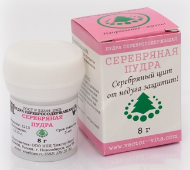
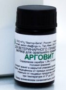

Продукция НПЦ «Вектор-Вита»
Серебросодержащие препараты и субстанции, сертифицированные по действующим стандартам, с инструкциями по применению и местами продажи.
Как приобрести?
Приобрести наши препараты можно также по списку партнёров, а также в следующих точках продаж:
- магазин «На здоровье!», Наукоград Кольцово, ТЦ «Золотая долина», тел. 8 905 953 91 73;
- «Товары для здоровья», г. Новосибирск, ул. Никитина 20, оф. 108 (вход со стороны ул. Никитина, во вход СибНИИПроектЦемент), тел. (383) 266 55 01, (383) 291 54 88;
- «Лавка здоровья», г. Новосибирск, переход станции метро «Красный проспект» (выход к магазину «Синтетика»), киоск 35, тел. (383) 269-43-89, 8-913-734-77-61;
- сеть аптек ООО «Фармотека» (г. Красноярск, ул. Судостроительная, 52а, тел. 8-953-588-83-75, или ул. Калинина, 47, тел. 8-904-894-94-65);
- фирменная фито-аптека ЗАО «Фито-Пам» (г. Горно-Алтайск, ул. Чорос-Гуркина, 33/1, тел. (388 22) 22 444, 8-913-998-0780);
- г. Тюмень, ул. Щербакова 142, тел. 8 922 26 27 611, 8 922 486 39 95.
Инструкции по пользованию нашими продуктами

Аргогель
Косметический гель с наночастицами серебра для ухода за кожей лица и тела.

Аргокрем
Косметический крем с антимикробным действием для ежедневного ухода.

Серебряная пудра
Противомикробная присыпка на основе наноструктурного серебра для использования в косметике и гигиенических средствах.

Арговит
Ветеринарный препарат на основе наночастиц серебра. Субстанция биосеребра для производства медицинских, косметических и ветеринарных средств.
Субстанции серии Арговит
НПЦ «Вектор-Вита» производит концентрированные водно-полимерные растворы субстанций (сырья), которые используются для выпуска продукции в потребительской упаковке:
- Арговит-Био — стабилизатор гидролизат коллагена;
- Арговит-С — стабилизатор смесь гидролизата коллагена + поливинилпирролидон;
- Арговит-ПВП — стабилизатор поливинилпирролидон.
При необходимости разработки индивидуальных рецептур и материалов свяжитесь с нами — контакты.